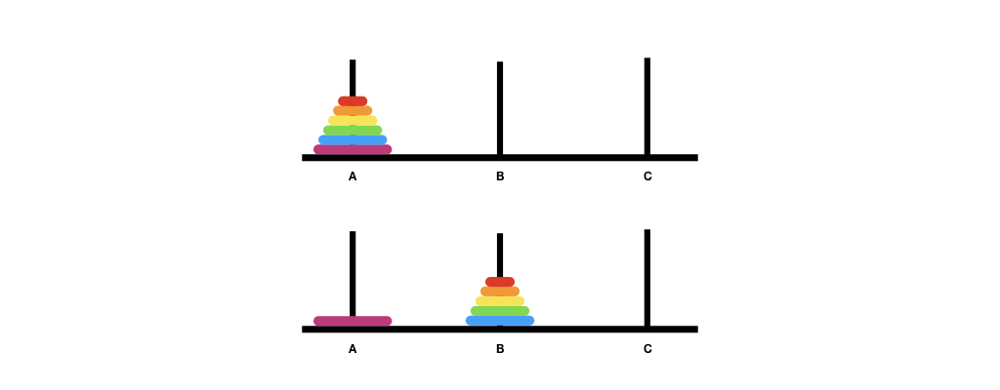
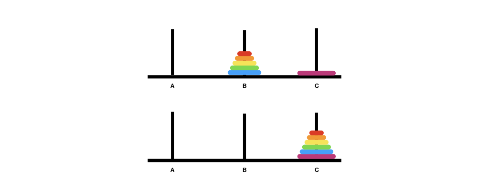

Unit 23: Tower of Hanoi
Learning Objectives
After this unit, students should:
- appreciate of how recursion can be used in a non-linear way that cannot be easily replaced with an iterative solution
- aware of the classic Tower of Hanoi problem
- understand the recursive solution to the Tower of Hanoi problem
The Tower of Hanoi Problem
We have introduced you to the concept of recursion since the beginning of the module. So far, however, we dealt mostly with linear recursion -- recursive solutions that can be re-formulated with loops. We have not yet unleashed the true power of recursive thinking. We will do so in this unit.
In this unit and the next two units, we will see how we can use recursion to solve more complex problems. We will start with the Tower of Hanoi problem in this unit.
The Tower of Hanoi problem is a famous mathematical puzzle invented by French mathematician Édouard Lucas in 1883. It goes like this: There are three pegs and \(n\) disks of various sizes that we can slide into any of the pegs. There are a few rules that we have to obey:
- we can only move one disk at a time;
- we can only move the topmost disk from one peg and place the disk on another peg;
- no disk can be placed on top of a smaller disk.
In the beginning, we have all the disks in one peg. The goal is to move all the disks onto another peg.
Wikipedia has the following animation showing how to solve the puzzle with 4 disks in 15 steps.

by André Karwath aka Aka - Own work, CC BY-SA 2.5, Link
You can play a version online here
Using Recursion
Recall the two steps in recursive problem-solving: (i) reduce the problem to the simplest version where we can solve it trivially; and (ii) assuming that we can solve the simpler version of the problem, we build on top of the solution to solve the more complex version.
What is the simplest version of the Tower of Hanoi puzzle? It is the version with only a single disk. In this version, the solution is trivial -- we just move the disk from the source peg to the destination peg
Let's label the pegs A, B, and C, with A being the source and C being the destination. We will use peg B as a temporary placeholder.
Now, let's assume that we can solve the Tower of Hanoi puzzle for \(k-1\) disks. How can we solve the puzzle for \(k\) disks? It turns out the solution is equally trivial. First, move the top \(k-1\) disk from A to B. This would free up the largest disk, which we move from A to C. Then, we move the \(k-1\) disk from B to C.
 
The figures above illustrate the recursion steps. The first figure shows the original configuration. The second figure shows the recursive step -- by wishful thinking, we believe that we can solve the puzzle for \(k-1\) disks and move \(k-1\) disks from A to B, using C as the placeholder. The third figure shows the move after moving the largest disk from A to C. The last figure shows the move of \(k-1\) disks from B to C. Now that A is empty, the last move uses A as the placeholder.
Representing the Tower of Hanoi in Code
To write a solution to the Tower of Hanoi, we need to decide how to represent the disks and the pegs in our code. We are going to abstract out only the necessary details. Such an abstraction process is similar to what we have done so far, representing elevations data as integers, student ids as integers, etc. Here, we are representing physical objects, but note that the actual size of the disks, the location of the pegs, etc, do not matter in our code. As such, we will represent the disks with integers 1 to \(k\) (1 being smallest, \(k\) being the largest) and pegs with characters 'A', 'B', and 'C'.
The Solution
Let's write the code for a function void solve_tower_of_hanoi(long k, long source, long dest, long placeholder), which will print out the solution for moving \(k\) disks from the peg source to the peg dest.
1 2 3 4 5 6 7 8 9 10 | |
where print is a helper function to display the move to standard output.
1 2 3 4 5 6 7 8 9 | |
Running Time
How many moves does it take to solve the Tower of Hanoi puzzle with \(k\) disks?
If \(k\) is 1, then it takes one move. Otherwise, let us denote the number of moves taken as \(T(k)\). From the code, we can see that it takes \(T(k) = 2T(k-1) + 1\).
You can see that:
So,
Since \(T(1) = 1\), we have
Thus, solving the Tower of Hanoi with \(k\) disks takes \(2^k-1\) steps.
Solving Tower of Hanoi Iteratively
Every recursive algorithm can be expressed as an iterative one. Thus, an algorithm to solve the Tower of Hanoi iteratively exists. It is, however, non-trivial and not as easily understood. Such a solution usually involves a data structure called stack (you will learn this in CS2040C). The stack simply imitates the recursive call stack of our recursive solution.
You can put some thought into how to solve the Tower of Hanoi using only loops to convince yourself that the recursive solution is much neater.
Problem Set 23
Problem 23.1
Suppose that we add a new restriction to the Tower of Hanoi puzzle. Let's say that the disks are on Peg A, to begin with, and we want to move the disk to Peg C. We are only allowed to move a disk either to Peg B from another peg or from Peg B to another peg. In other words, we cannot move the disks between Peg A and Peg C directly.
Change the recursive algorithm above to solve the Tower of Hanoi with this new restriction. How many steps (use big O notation) are needed now?
Appendix: Complete Code
1 2 3 4 5 6 7 8 9 10 11 12 13 14 15 16 17 18 19 20 21 22 23 24 25 26 27 28 29 30 31 32 33 34 | |